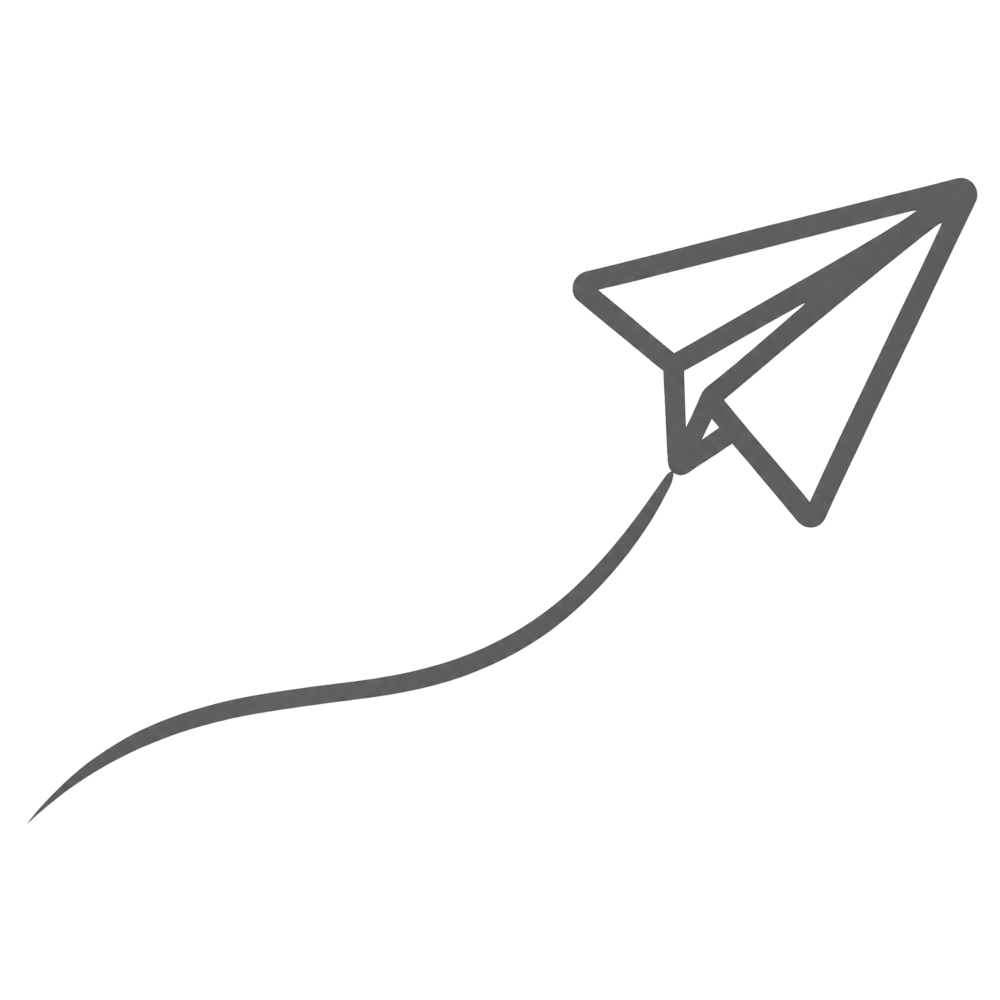

Confirmar rotación
¿Ya rotaste o desactivaste la credencial en su cuenta de origen?
Al confirmar, Cirrus deja de enviarte recordatorios.
¿Ya rotaste o desactivaste la credencial en su cuenta de origen?
Al confirmar, Cirrus deja de enviarte recordatorios.
